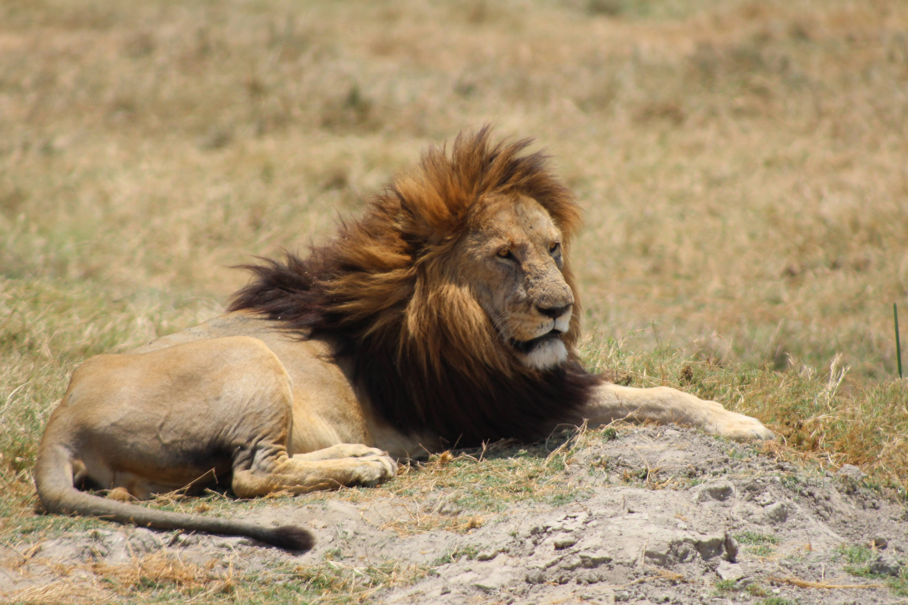
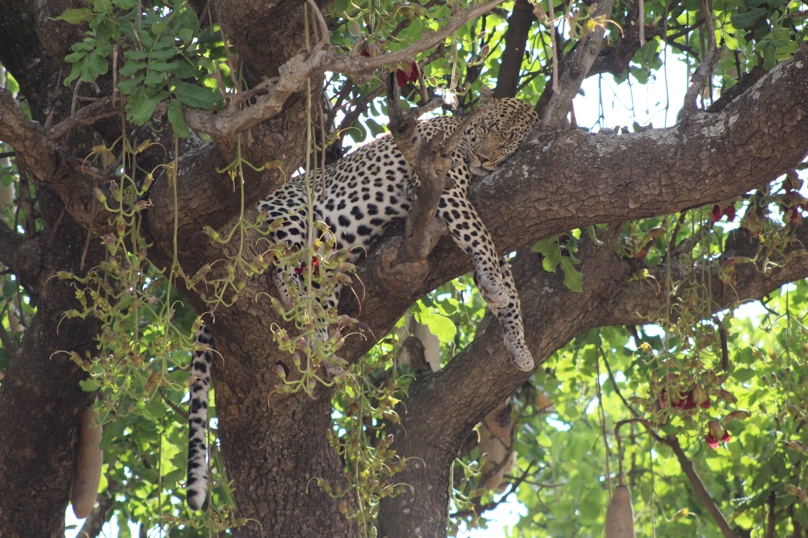
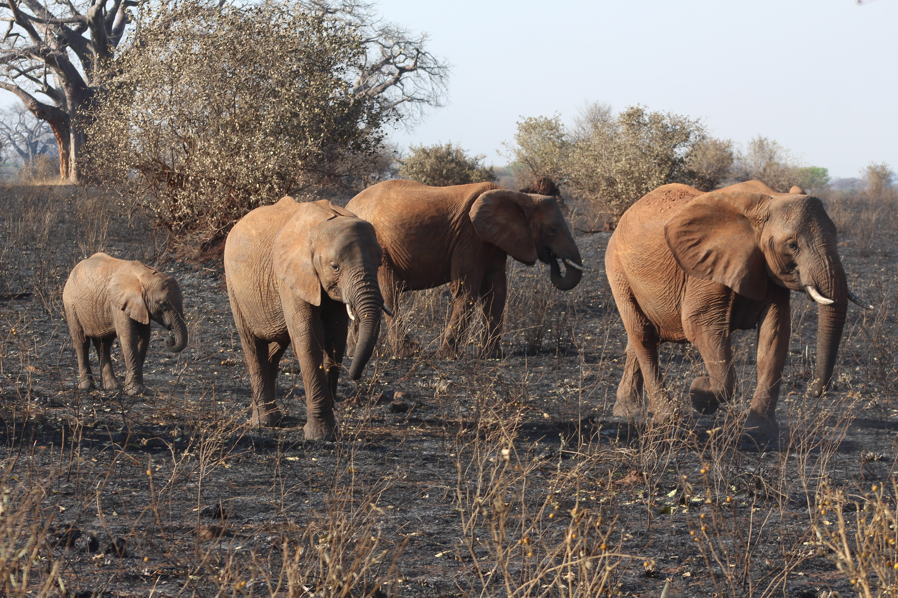
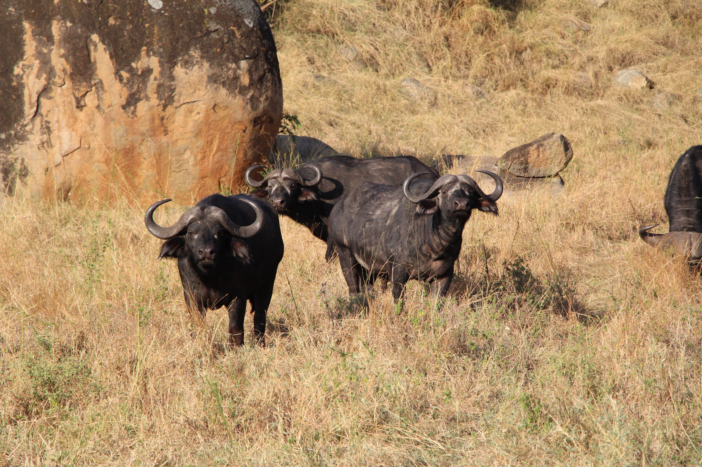
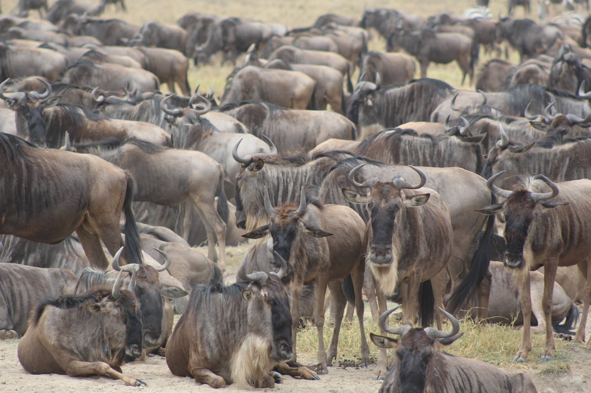
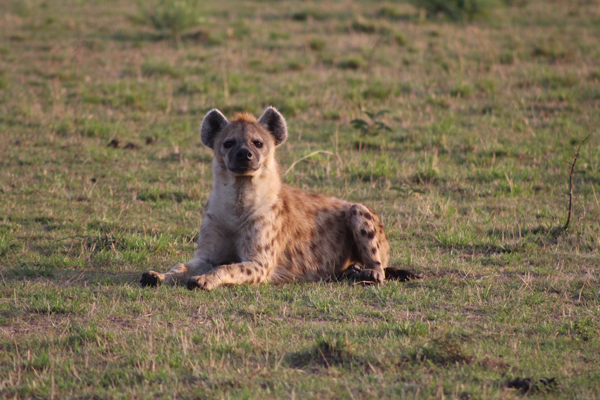
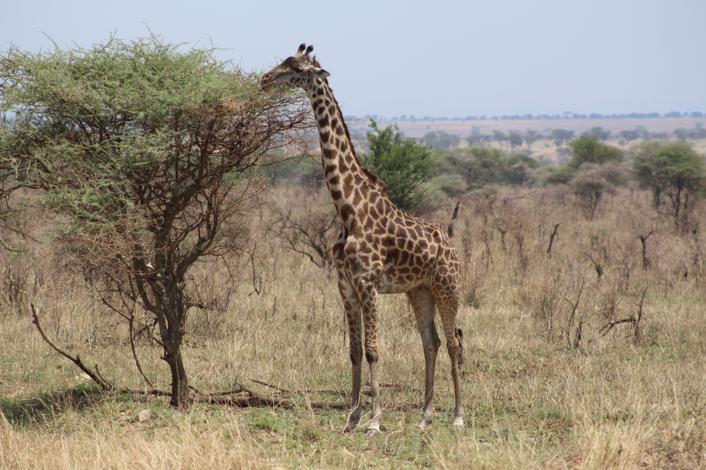

Tanzania is a jewel of East Africa, renowned worldwide for its exceptional wildlife viewing opportunities.
Home to some of the most spectacular safari destinations on the planet, Tanzania offers visitors an unforgettable glimpse into the natural world.
Tanzania's wildlife diversity is extraordinary - from the iconic big cats (lions, leopards, and cheetahs) to elephants, giraffes, hippos, and over 1,000 bird species.
The country's conservation efforts have helped preserve this natural heritage, making Tanzania one of Africa's premier wildlife destinations.
Tanzania's national park system represents one of Africa's most significant conservation achievements, encompassing approximately 57,000 square kilometers across sixteen distinct parks that protect the country's extraordinary biodiversity. Established beginning with Serengeti National Park in 1951, Tanzania's park system has evolved into a global model for balancing wildlife protection with sustainable tourism development. The Tanzania National Parks Authority (TANAPA) manages these protected areas with a dual mission of conservation and providing accessible wildlife experiences for visitors from around the world. National Parks also serve as living laboratories for scientific research, climate change monitoring, and educational programs that build conservation awareness among both citizens and international visitors. The challenges facing these protected areas continue to evolve, from human population growth and habitat fragmentation to climate change impacts, illegal wildlife trafficking, and balancing tourism development with conservation priorities.
The Serengeti National Park is perhaps Tanzania's most famous attraction, hosting the Great Migration - one of nature's most impressive spectacles where over 1.5 million wildebeest and hundreds of thousands of zebras and gazelles traverse the plains in search of fresh grazing.
This annual circular journey is a life-and-death drama playing out across the savanna.
Ngorongoro Crater, a UNESCO World Heritage site, is another highlight. This collapsed volcanic caldera forms a natural enclosure for approximately 25,000 animals, including the densest population of lions in Africa.
The crater floor provides a unique ecosystem where visitors can spot the "Big Five" (lion, leopard, elephant, buffalo, and rhinoceros) in a single day.
Tarangire National Park is famous for its elephant herds and iconic baobab trees.
The "Big Five" refers to five iconic African animals—lion, elephant, buffalo, leopard, and rhinoceros—originally grouped together by colonial hunters as the most difficult and dangerous animals to hunt on foot.
Lions are large social cats that live in groups called prides, typically consisting of related females, their cubs, and a few adult males. They are apex predators that hunt cooperatively, primarily targeting large ungulates like wildebeest and zebra. In Tanzania, lions are commonly found in the Serengeti and Ngorongoro Crater, with adult males weighing up to 225 kg and distinguished by their prominent manes.
Leopards are solitary, highly adaptable big cats known for their strength, stealth, and ability to climb trees with prey twice their weight. They have distinctive rosette-patterned coats that provide excellent camouflage in dappled light and shade. Leopards are primarily nocturnal and have territories that may overlap with several females but are defended against other males.
Elephants are the largest land mammals, known for their intelligence, complex social structures, and remarkable memory. African elephants in Tanzania can weigh up to 6 tons and live for 60-70 years, with herds led by matriarchs who pass down knowledge about migration routes and water sources. They play a crucial ecological role by modifying habitats through their feeding habits, creating clearings that benefit other species.
African buffaloes are large bovines that gather in herds ranging from dozens to thousands, providing protection against predators. They require daily access to water and are most active during early mornings and late afternoons when they graze on grass. These unpredictable animals are responsible for more hunter deaths in Africa than any other large animal, earning their place among the "Big Five" game animals.
Rhinoceros populations in Tanzania consist primarily of black rhinos, which are critically endangered due to poaching for their horns. Unlike white rhinos, black rhinos are browsers that feed on leaves, branches, and shrubs using their prehensile upper lip. They are generally solitary, have poor eyesight but excellent hearing and sense of smell, and can reach speeds of 55 km/h despite weighing up to 1,500 kg.
Tanzania hosts over 430 mammal species, 1,100 bird species, 275 reptile species, and more than 100 amphibian species, making it one of Africa's most biodiverse countries with approximately 40% of its land area designated as protected.
Cheetahs are the fastest land animals, capable of reaching speeds up to 110 km/h in short bursts for hunting. Their specialized adaptations for speed include a flexible spine, non-retractable claws for traction, enlarged heart and lungs, and distinctive tear marks that may reduce glare from the sun. Unlike other big cats, cheetahs cannot roar but instead chirp, purr, and make high-pitched calls.
Zebras have black and white striped patterns that are unique to each individual, similar to human fingerprints, and help confuse predators through motion dazzle when in groups. They live in family groups consisting of one stallion, several mares, and their young, while bachelor males form separate herds. Zebras have excellent eyesight and hearing, allowing them to detect predators from a distance.
Wildebeest are the principal players in the Great Migration, where approximately 1.5 million animals travel in a clockwise circuit through the Serengeti ecosystem following seasonal rains and fresh grass. They are born with the ability to run within minutes of birth, a crucial adaptation for survival in predator-rich environments. Wildebeest herds benefit from their relationship with zebras, who eat the tougher outer grass layers, exposing more nutritious parts for the wildebeest.
Hyenas are highly intelligent social animals with complex clan structures led by dominant females, not just the scavengers they're often portrayed as. They are effective hunters with incredibly strong jaws that can crush bone, allowing them to extract nutrients other predators cannot access. Their distinctive "laughing" vocalization is actually a sign of excitement or nervousness, serving as communication within their social groups.
Giraffes are the tallest living terrestrial animals, using their height advantage to browse on vegetation other herbivores cannot reach, particularly acacia trees. Their distinctive coat patterns vary among different subspecies and populations in Tanzania, and serve as camouflage and thermal regulation. Despite their long necks, giraffes have the same number of vertebrae as humans (seven), just greatly elongated.
The Great Migration is the world's largest terrestrial wildlife movement, involving approximately 1.5 million wildebeest, 200,000 zebras, and 300,000 gazelles traveling in a continuous 800-kilometer circuit through Tanzania's Serengeti and Kenya's Maasai Mara ecosystems.
This annual cycle is driven by rainfall patterns that determine grass growth, with animals constantly seeking fresh grazing opportunities throughout the year. The most dramatic moments occur during river crossings, particularly at the Grumeti and Mara Rivers, where crocodiles and strong currents pose significant dangers, resulting in thousands of drownings each year. The migration follows a clockwise pattern: calving season in the southern Serengeti (January-March), northward movement (April-June), Mara River crossings (July-September), and the return journey southward (October-December). This natural phenomenon not only sustains the grassland ecosystem through grazing and fertilization but also supports numerous predator populations that follow the herds, creating one of Africa's most complex and impressive wildlife spectacles.